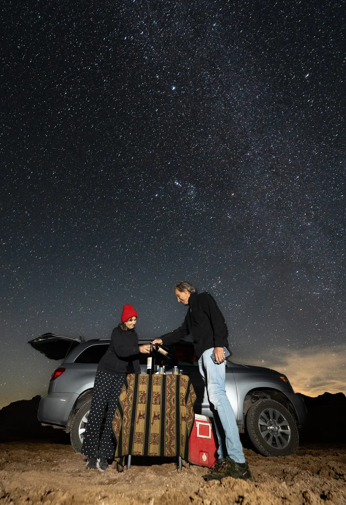
Te buscamos en tu hotel cuando el desierto cambia de color. El silencio empieza antes de que anochezca.
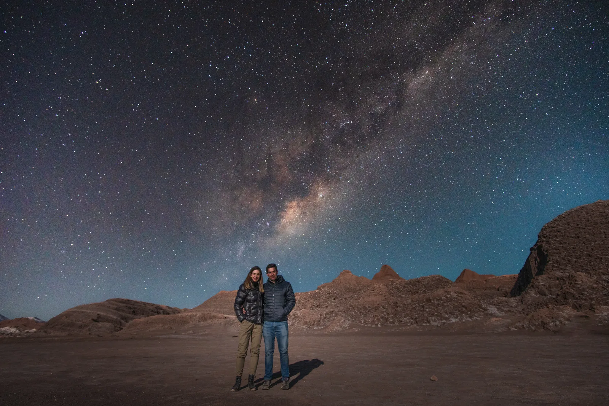
En 4x4 nos alejamos hasta un lugar secreto en la Cordillera de la Sal. Sin caminos, sin luces, sin nadie mas. Solo ustedes y la Via Lactea.
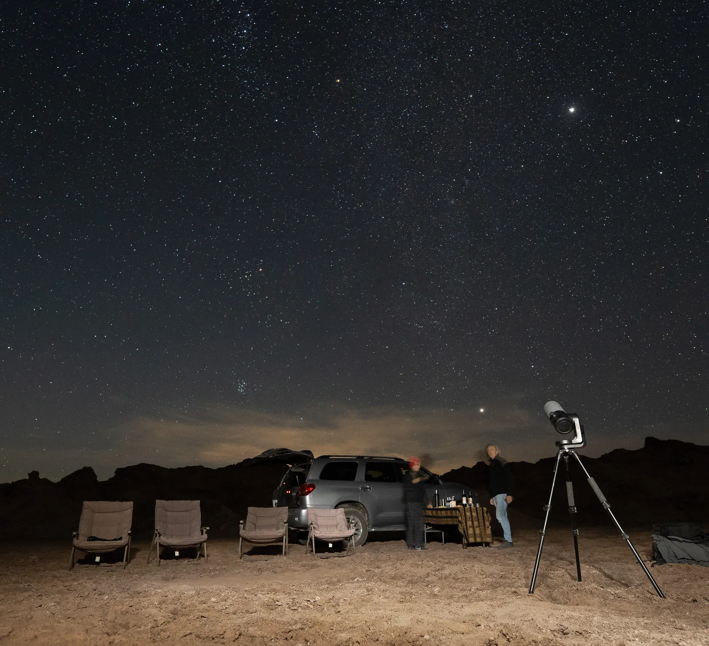
Sillas reclinables, mantas y vino tinto. Mientras la Via Lactea cruza el cielo, el telescopio captura lo invisible.
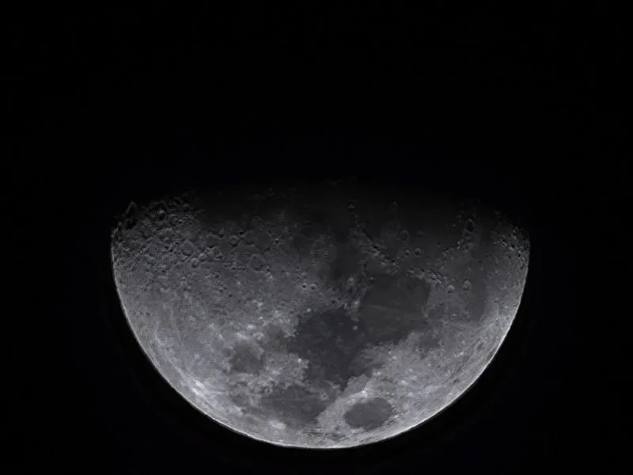
Nebulosas a miles de anos luz, galaxias de millones de estrellas. Todo capturado en tiempo real, todo tuyo para llevar.
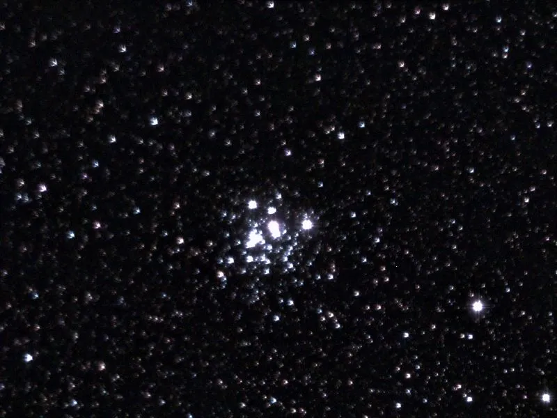
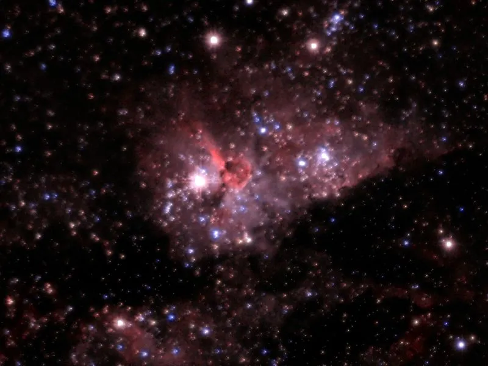
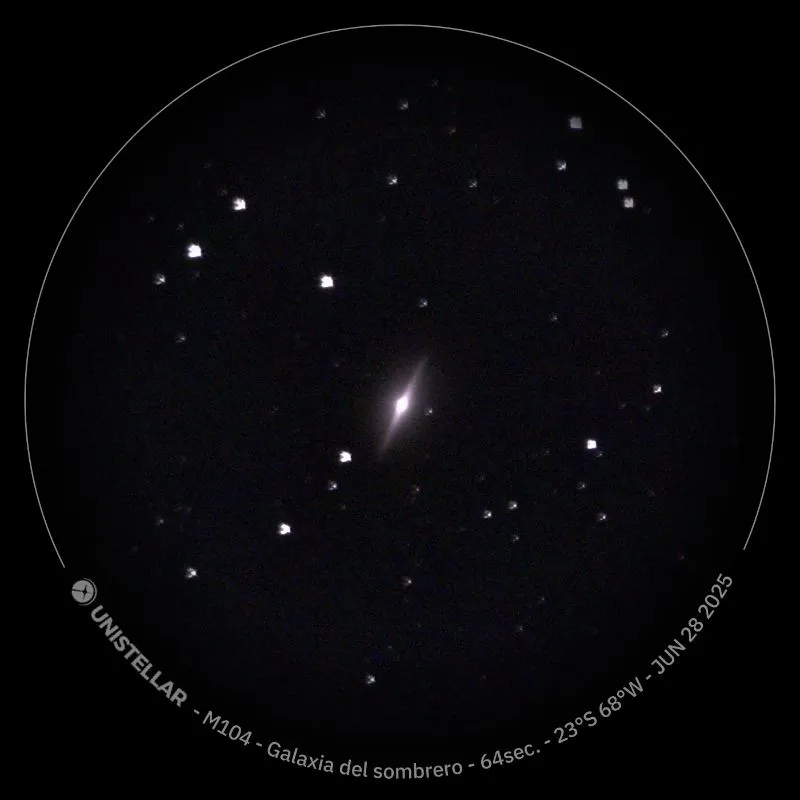
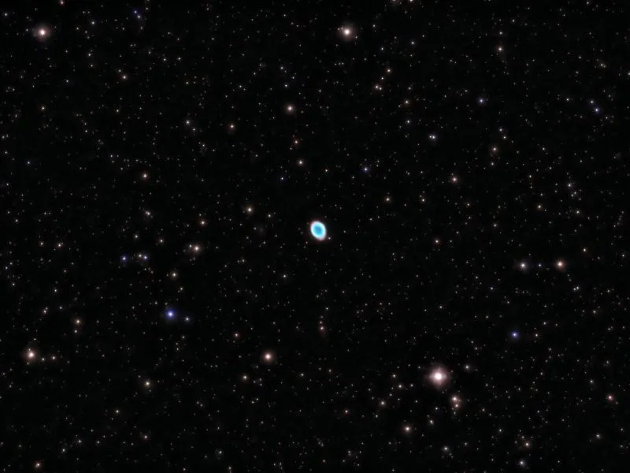
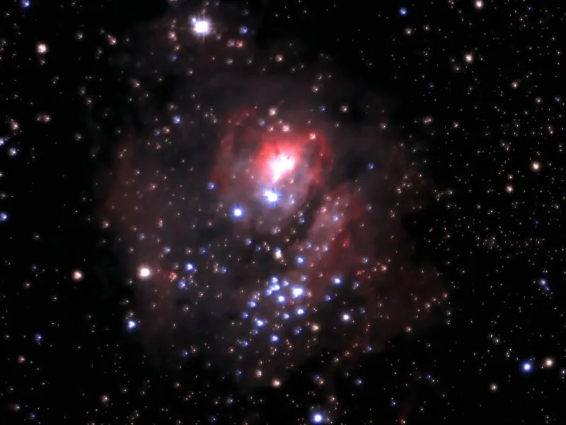
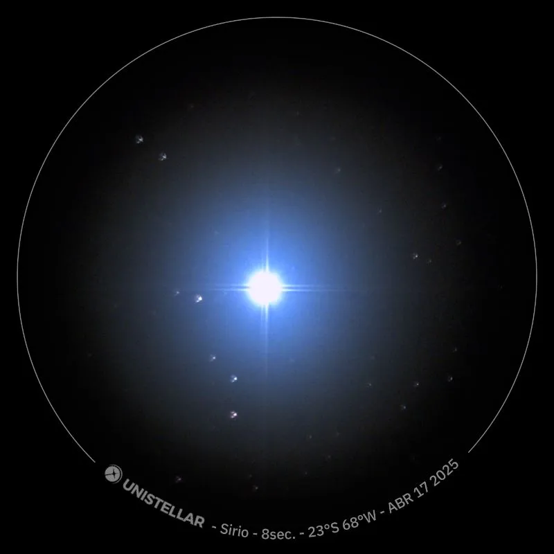
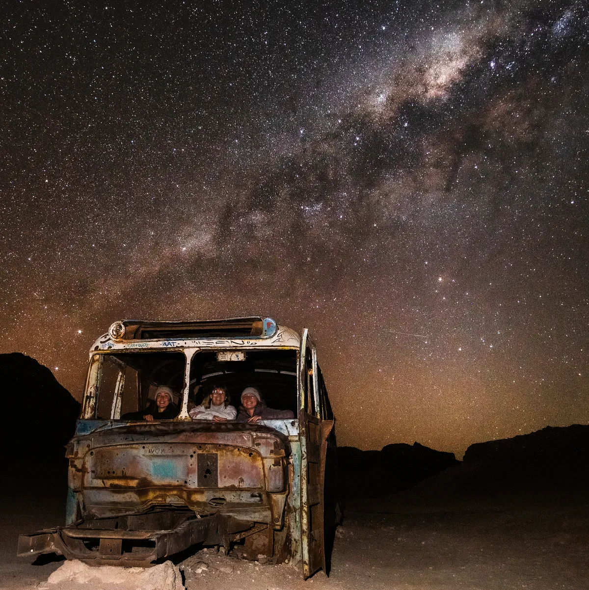
Experiencias privadas para 1-6 personas. Ningun tour se repite, porque el cielo nunca es el mismo.